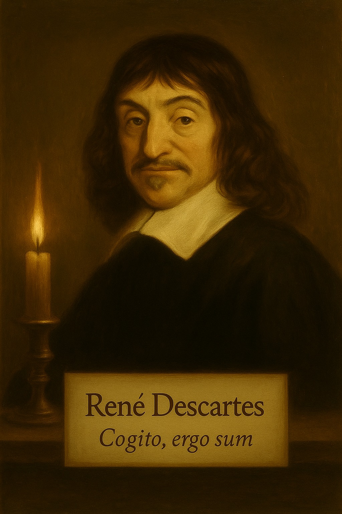

René Descartes
"Cogito, ergo sum"
⟨ Prev
Next ⟩
Philosopher Dialogue Simulator
Aufklärung — Reason vs Faith
René Descartes menatapmu tajam. “Menurutmu, kebenaran berasal dari mana?”
Scene 1 / 5
Hasil
Main Lagi